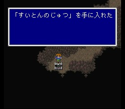
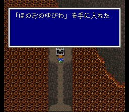
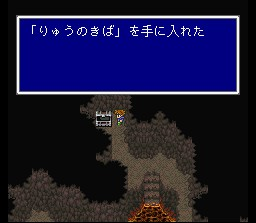
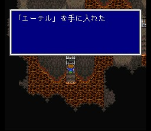
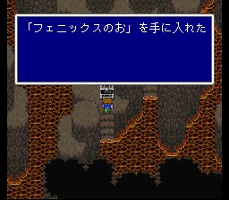
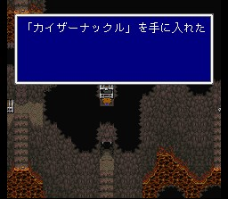

대해구
바다 한가운데에 잠수함으로 갈 수 있는 곳으로 제3석판이 있습니다. 길따라서 계속 가다보면 나오는 놈들은 죄다 징그럽게 생긴 언데드들입니다. 사정없이 레퀴엠을 퍼부어줍시다. 성속성에도 약합니다. 해골같이 생긴 놈은 죽음의 선고를 씁니다. 아이템 중에서 쓸 만한 거라면 카이저 너클이 있습니다.
아이템 챙기면서 가다보면 주민이 5명인 드워프 왕국에 도착합니다. 상당히 강력한 장비들을 팔고 있으니 체크하시고.. 한 드워프는 깊숙한 동굴을 파고 있는데, 그에게서 신기루 마을의 위치를 확인할 수 있습니다.
무기상: 대지의 해머, 키쿠이치몬지, 모닝스타, 마봉인의 활
방어구상: 크리스탈의
방패, 크리스탈헬름, 흑두건, 서클렛, 크리스탈메일, 흑장속, 흑의 로브, 백의 로브
스위치 조작을 해야 하는 길이 있는데 잘 통과하시고, 마지막에 도달하면 보스가 기다립니다. 포보스, 네레이드, 트리톤 삼형제입니다. 셋을 동시에 없애야 하는데.. 레퀴엠을 쓰면서 언데드가 아닌 놈을 공격하여 타이밍을 잘 맞춥시다.
이들을 물리치면 제3석판과, 최강 시공마법인 메테오를 얻습니다.